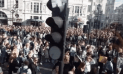

Dù tới ngày 1/6 (giờ địa phương) đêm nhạc của BTS tại sân vận động Wembley (Anh) mới diễn ra nhưng người hâm mộ nhóm đã đứng kín đường phố London từ chiều 31/5.
Không chỉ dừng lại ở quy mô châu Á, "cơn sốt" BTS đã được nhân rộng và phủ sóng khắp thế giới. Trong chưa đầy 3 năm, nhóm nhạc 7 thành viên lần lượt chinh phục những cột mốc thành tựu mà chưa từng có nghệ sĩ Hàn nào đạt được.
Mới đây, nhóm nhạc nhà Big Hit tiếp tục làm nên lịch sử khi tổ chức đêm nhạc riêng tại sân vận động Wembley của nước Anh. Đây là sân vận động có sức chứa lớn thứ 2 tại châu Âu với tổng cộng 90 nghìn chỗ ngồi. Trước BTS, chỉ có những ngôi sao hàng đầu thế giới như Madonna, Beyoncé, Taylor Swift, One Direction... mới đủ sức lấp đầy địa điểm này.
BTS làm nên lịch sử khi tổ chức đêm nhạc riêng trong sân vận động Wembley (Anh).
Đêm nhạc riêng của BTS sẽ được tổ chức vào tối 1/6 (giờ địa phương), tức trưa 2/6 (giờ Hà Nội). Tuy nhiên, từ trước thời điểm diễn ra show vài ngày, người hâm mộ nhóm nhạc Hàn từ khắp châu Âu đã đổ về London. Đặc biệt, cảnh tượng diễn ra chiều 31/5 ở quảng trường Piccadilly thậm chí còn khiến người dân nước Anh hoảng hốt.
Hàng nghìn fan đã tập trung để theo dõi đoạn video quảng cáo của nhóm BTS được chiếu trên màn hình LED khổng lồ ở quảng trường Piccadilly. Thậm chí, đám đông còn hát và nhảy theo nhạc của nhóm nam Hàn Quốc.
Cảnh tượng hàng nghìn người tụ tập làm ùn tắc đường phố London khiến nhiều người bất ngờ vì sức hút của BTS.
Trước đó, ban quản trị sân Wembley đã quyết định "nhuộm" tím toàn bộ sân vận động để chào đón nhóm nhạc thần tượng đình đám Hàn Quốc ghé thăm nước Anh.
Hàng nghìn người tụ tập chờ đón đêm nhạc của BTS gây ách tắc đường phố London.
Về phía BTS, nhóm quyết định chiếu trực tiếp trên Internet toàn bộ đêm nhạc tại sân vận động Wembley. Đây là quyết định khá táo bạo nhưng nhận được sự ủng hộ nhiệt tình của cộng đồng người hâm mộ.
Trong buổi họp báo trước giờ bắt đầu đêm diễn, BTS cho biết nhóm yêu thích Coldplay và Paul McCartney. Bảy chàng trai hy vọng có cơ hội gặp mặt hoặc hợp tác cùng các tên tuổi đình đám của nước Anh.
Trong đêm diễn ở Brazil, thành viên Ji Min bị trượt ngã khi trình diễn. Khác với những sự cố bình thường, tai nạn sân khấu của nam thần tượng lại khiến fan bật cười.